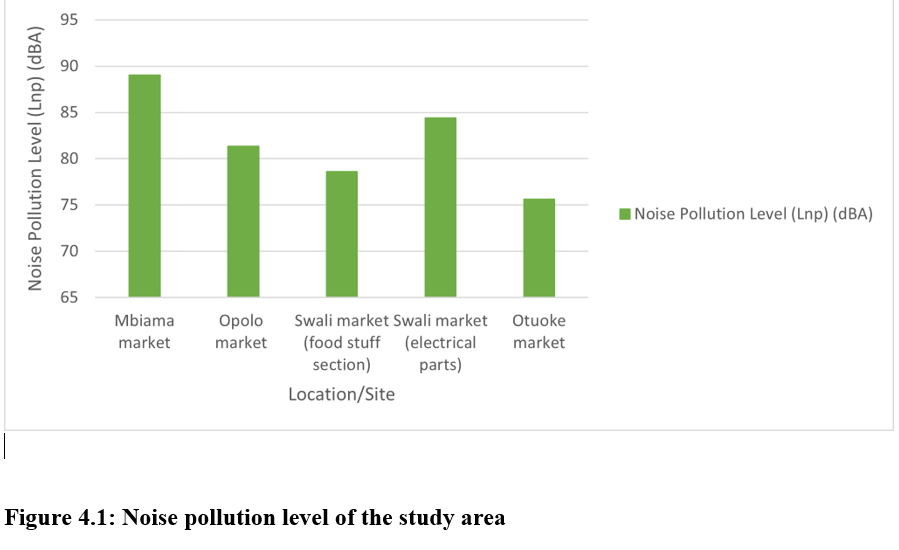

Project Overview
This was my undergraduate research project completed as part of my B.Sc. Physics programme at Federal University Otuoke, Bayelsa State, Nigeria.
The study assessed environmental noise levels in five selected markets and examined the level of noise pollution recorded at the different locations.
Research Objective
The study was designed to understand the level of environmental noise associated with activities within the selected market environments.
- Measure the equivalent noise levels at the selected markets.
- Assess the level of noise pollution resulting from market activities.
- Identify possible sources of noise within the selected environments.
- Examine possible effects of environmental noise on health and quality of life.
Data Collection
Noise measurements were collected directly from five selected market locations. A TES-1350A sound level meter was used to obtain the noise measurements, while GPS was used to obtain location information for the selected sites.
Study Locations
- Mbiama Market
- Opolo Market
- Swali Market — Foodstuff Section
- Swali Market — Electrical Parts
- Otuoke Market
Methodology
The research combined experimental measurements with computational analysis of the recorded results.
The Noise Pollution Level (Lnp) was calculated using the relationship:
Where Leq represents the equivalent sound level, K = 2.56, and σ represents the standard deviation of the acquired Leq values.
Golden Software Surfer was also used for map analysis and spatial representation of the research results.
Research Process
Measurement
Data
Processing
Analysis
Interpretation
Research Results
The recorded results showed differences in noise levels across the five selected market locations.
| Market | Leq (dBA) | Lnp (dB) |
|---|---|---|
| Mbiama Market | 75.50 | 89.02 |
| Opolo Market | 67.80 | 81.32 |
| Swali Market — Foodstuff | 65.10 | 78.62 |
| Swali Market — Electrical Parts | 70.90 | 84.42 |
| Otuoke Market | 61.80 | 75.62 |
Data Visualization & Mapping
The research used computational analysis and Surfer to support the interpretation and spatial representation of the recorded noise levels.

Research visualization.
Key Findings
Mbiama Market recorded the highest Noise Pollution Level at 89.02 dB.
Otuoke Market recorded the lowest Noise Pollution Level at 75.62 dB.
Noise Pollution Levels varied considerably across the five selected market environments.
Traffic, market activities, crowding and proximity to roads were identified as possible contributors.
Recommendations
Based on the findings of the research, the study recommended several measures for reducing exposure to elevated environmental noise.
- Regular maintenance of equipment.
- Use of noise barriers where appropriate.
- Use of quieter equipment.
- Increased awareness of noise pollution.
- Use of hearing protection where necessary.
- Health checks for people exposed to elevated noise levels.
Tools & Methods Used
Academic Context
Programme: B.Sc. Physics
Institution: Federal University Otuoke, Bayelsa State, Nigeria
Department: Department of Physics
Year: 2025
Researcher: Joecliff Ayibabrakemi Wilson
Research Document
The complete undergraduate research project and supporting materials are available in the project's GitHub repository.